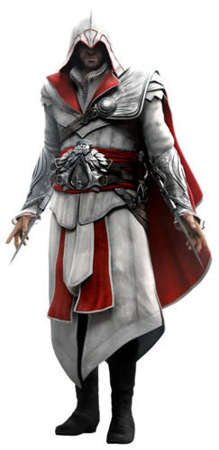

Franquia da Ubisoft*** Página Principal
Franquia da Ubisoft*** Página Principal
Ezio Colection

Desmond controla Ezio, um jovem que vivia na Itália Renascentista que morava normalmente, porém ouve uma injustiça com seu pai,e ele teve que fugir de sua cidade natal e morar em Toscana de Monteriggioni com o resto de sua família, até que descobriu que seu pai possuia uma erança, ele fazia parte do credo dos Assassinos, assim Ezio treinou para virar um assassino e se vingar de seu pai perseguindo os Templarios.
- Os jogos da coleção são:
- Assassin's Creed 2;
- Assassin's Creed Brotherhood;
- Assassin's Creed Revelations.
- Sobre Ezio
- Nome completo:Ezio Auditore da Firenze
- Data de nascimento: 24 de junho de 1459
- Cidade Natal: Florença
- Data de falecimento:30 de novembro de 1524 (aos 65 anos)
- Atores e Dubladores:Devon Bostick,Roger Craig Smith,Kid Beyond (Discovery)